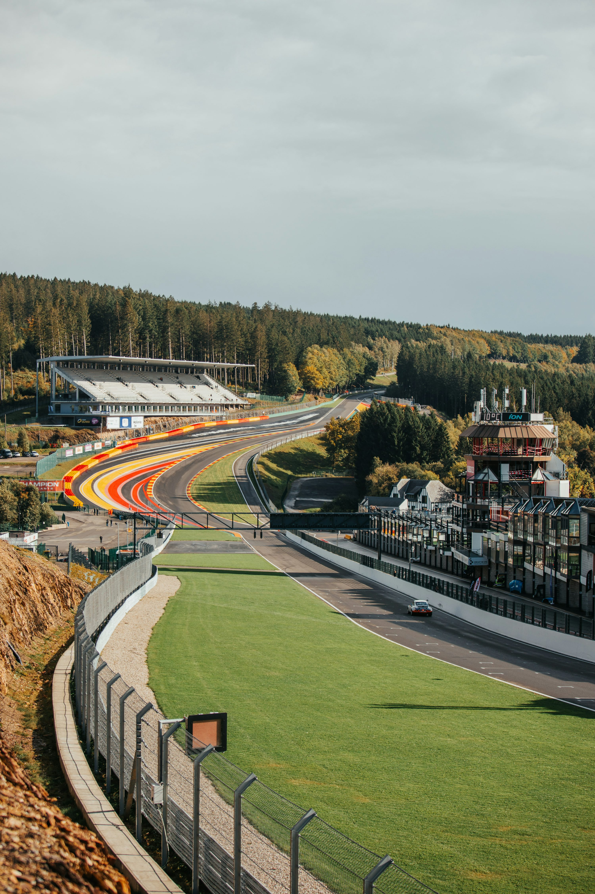

Canadian Grand Prix ? Circuit Gilles-Villeneuve ? 2026.05.22?24

所有時間為 EDT（美東夏令，UTC−4）· 台灣時間 = EDT + 12小時
| 日期 | 場次 | EDT | 台灣時間 | 類型 |
|---|---|---|---|---|
| 5/22 (五) | 自由練習 FP1 | 12:30 | 5/23 00:30 | 練習 |
| 5/22 (五) | 衝刺排位賽 Sprint Qualifying | 16:30 | 5/23 04:30 | SPRINT |
| 5/23 (六) | 衝刺賽 Sprint Race | 12:00 | 5/24 00:00 | SPRINT |
| 5/23 (六) | 正式排位賽 Qualifying | 16:00 | 5/24 04:00 | QUALI |
| 5/24 (日) | 🏆 正賽 Grand Prix | 14:00 | 5/25 02:00 | RACE |
蒙特婁賽道是典型的「走走停停（stop-start）」佈局，由聖羅倫斯河上的 Île Notre-Dame 環島而成。賽道共有多個大煞車彎，尤其是著名的「冠軍之牆（Wall of Champions）」最後一個髮夾彎，無數名將在此折戟。
賽道對剎車信心、直線加速效率與出彎牽引力要求極高。超光滑的路面會造成輪胎起粒（graining）而非典型的磨損，讓策略節奏更難預判。若出現安全車，原本的一停策略可能瞬間打亂。
⚠️ 蒙特婁安全車出現率極高（歷史約 70%），建議留意策略彈性空間。
Hamilton 在蒙特婁歷史 7 勝的主場效應是本站最大變數；若 Ferrari 加拿大升級奏效，「Hamilton 蒙特婁奇蹟」並非不可能。
評分維度：直線速度 / 過彎穩定 / 輪胎管理 / 升級節奏 / 排位賽表現 / 正賽策略 ─ 依本賽季前四站綜合表現評估